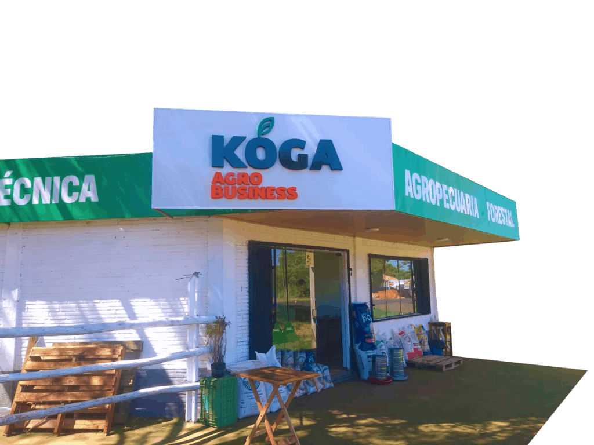

¿Quiénes somos?
SEMBRAMOS FUTURO
Somos una empresa especializada en la producción de plantines de eucaliptos, de yerba mate y de plantines de diferentes especies nativas o forestales.
Además, contamos con insumos de forestación para la preparación, cuidado y producción adecuada del cultivo de los plantines.
Brindamos asistencia técnica gratuita a cada uno de nuestros clientes, de manera que nuestro acompañamiento aporte el conocimiento y las técnicas correctas para un exitoso crecimiento de los árboles.
Nos dedicamos a la producción y distribución de productos agrícolas con asesoramiento especializado según tus necesidades de producción.
Nos dedicamos a la producción y distribución de productos agrícolas con asesoramiento especializado según tus necesidades de producción.
¿Por qué elegirnos?
Semillas Certificadas
Contamos con infraestructura, semillas certificadas, trayectoria, trabajo con profesionales e instituciones avalan nuestra empresa.
Amplio Stock
Nuestra producción es suficiente para satisfacer las necesidades de la gran demanda forestal.
Asesoramiento
Realizamos asesoramiento según sus necesidades y tipos de suelos disponibles, para que su forestación sea eficiente.
Nuestros Servicios
- Venta de plantines de Eucalipto y Yerba Mate.
- Servicios de pasturas con eucalipto. (Silvopastoriles)
- Estudios de impacto ambiental.
- Asesoramiento para inversionistas.
- Estudios de factibilidad y propuestas técnicas.
- Preparaciones de suelos para forestación (canalizaciones, rastras).
Galeria

Realizamos
envíos a
todo el país
Novedades
Ventajas de los alimentos balanceados para animales
Kóga Agrobusiness Los alimentos balanceados poseen la función de suplir los minerales que están deficientes en las pasturas, promoviendo el equilibrio nutricional y participando directamente en elLeer más
Ventajas de los alimentos balanceados para animales
Kóga Agrobusiness Los alimentos balanceados poseen la función de suplir los minerales que están deficientes en las pasturas, promoviendo el equilibrio nutricional y participando directamente en elLeer más
Contáctanos
Encontranos en

Déjanos tus dudas o consultas.
Nombre
Mensaje